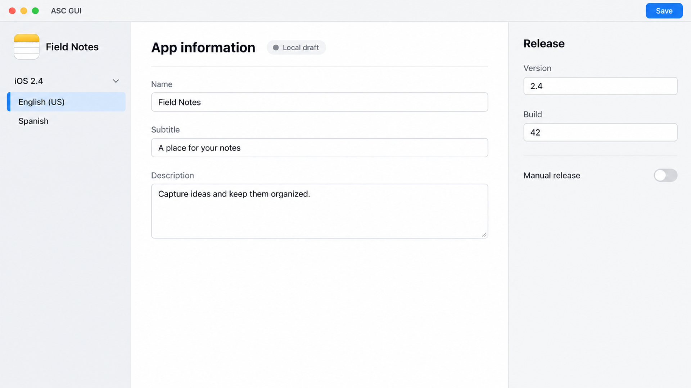
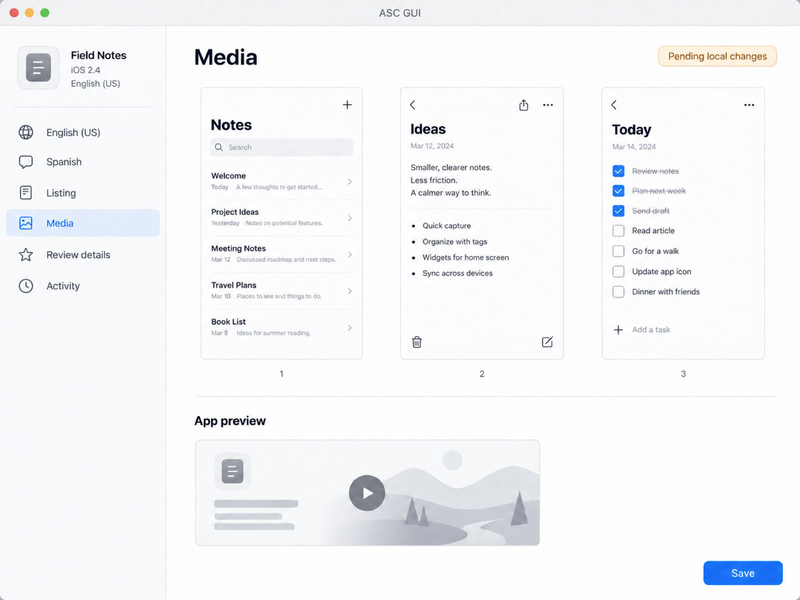
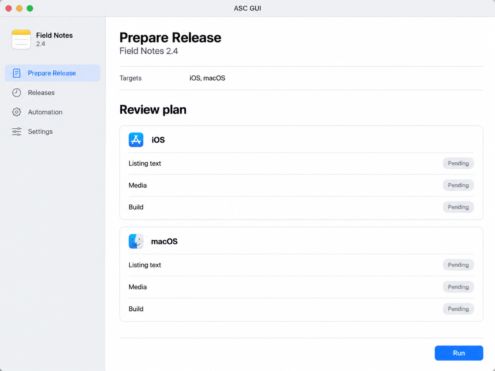
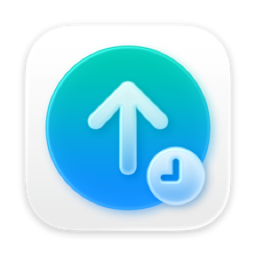

Give every locale
the same attention.
Edit descriptions, keywords, What’s New, and URLs. Keep the app, version, and language in view as you prepare each listing.
ASC GUI · Native for Mac · In development
Edit localized listings, arrange media, and manage review and release workflows in one native workspace.
See the workflowBuilt for developers updating their Apple apps.

Native Mac workspace
Local drafts
Explicit Save
Reusable release workflows
A place to prepare
App Store Connect is Apple’s service for managing your App Store apps. ASC GUI brings listing and release work to your Mac, with local drafts and a deliberate Save to send changes to Apple.
Edit descriptions, keywords, What’s New, and URLs. Keep the app, version, and language in view as you prepare each listing.
Preview and reuse selected text from the previous released version. Bring in saved review contact details and URL defaults.
Listing edits and staged media stay in a local draft between sessions. Save sends the prepared changes to App Store Connect.
Screenshots & app previews
Bring in the assets you’ve already made. Arrange screenshots, play app previews, and select poster frames before uploading.

The release workflow
From a local draft to a release request, each action has a purpose. Saving, submitting for review, and releasing are separate decisions.
Add your API key. Choose a profile, an existing app, and a version.
Edit each localized listing, arrange media, and choose a compatible processed build.
Send prepared changes to App Store Connect. Check Activity if an update needs attention.
Inspect supported requirements, select versions, and confirm submission. Apple decides the review outcome.
Use the version’s release policy, or request manual release when Apple reports the version eligible.
Saved automations
Save the inputs, review the plan, and follow each platform through the run.
Runs need ASC GUI running on your Mac. Quitting interrupts local execution; sleep pauses follow-up. Check status and explicitly continue interrupted work after returning. Requests already accepted by Apple can continue independently.

When work needs attention
When an update is uncertain, Activity gives you a place to check its status. Review conflicting local and remote values, then continue from the recorded result.
See the conflict.Review your local draft alongside values from App Store Connect.
Check before retrying.Inspect uncertain operations before sending remaining changes.
Follow each platform.Separate results show which targets completed and which need attention.
A direct connection to Apple
Connect directly to App Store Connect with a team or individual API key. Access depends on your key’s permissions and the app’s current state.
Open Settings and add an App Store Connect API key. Credentials are stored in this Mac’s Keychain.
Select a named profile, an existing app, a platform and version, then a localization.
Keep drafts locally. Saving content, uploading media, and checking release status connect to Apple’s services.
A few details
ASC GUI is in development. Download availability, pricing, and final system requirements have not been announced.
A compatible Mac, an existing app in App Store Connect, and a valid API key with access to the work you want to perform. Final macOS and hardware requirements will be confirmed with the release.
The current workspace supports version workflows for iOS, macOS, tvOS, and visionOS, subject to your app’s eligibility and Apple’s restrictions. iPhone and iPad media belong to the iOS workflow. ASC GUI itself runs on Mac.
Xcode Cloud is optional. Choose an existing compatible processed build in App Store Connect, or start an already configured Xcode Cloud workflow and follow its progress. ASC GUI does not archive, sign, or directly deliver IPA or PKG files. Keep using your existing build delivery workflow.
Drafts and staged media are stored locally. Connecting, opening or refreshing a workspace, uploading, checking status, submitting, and releasing require Apple’s services.
No. Automations run locally while ASC GUI can execute. Quitting interrupts execution and sleep pauses local follow-up. After returning, check status and explicitly continue. Waiting steps also have a limited observation period and may need a new status check. Apple can continue processing requests it has already accepted.
No. ASC GUI focuses on listings, media, versions, review, and release work. Age ratings, App Privacy, pricing and availability, agreements, and some compliance or product requirements still need Apple’s website. Supported checks do not certify that every Apple requirement is complete.
No. You edit localized text and manage existing media. ASC GUI does not generate translations, listing copy, screenshots, or videos.
No. Submission, Apple’s review decision, and distribution are separate stages. Release requests depend on eligibility, and each platform has its own result. ASC GUI does not guarantee approval or simultaneous publication.
In this Mac’s Keychain. ASC GUI uses it to authenticate direct requests to App Store Connect. Local drafts stay on your Mac until you save their content to Apple. App Review demo passwords are excluded from saved drafts and automation history and may need to be entered again.

ASC GUI for Mac
Prepare locally. Save deliberately. Follow the release.
In development. Release details will be announced here.
Independent software. Not affiliated with or endorsed by Apple.